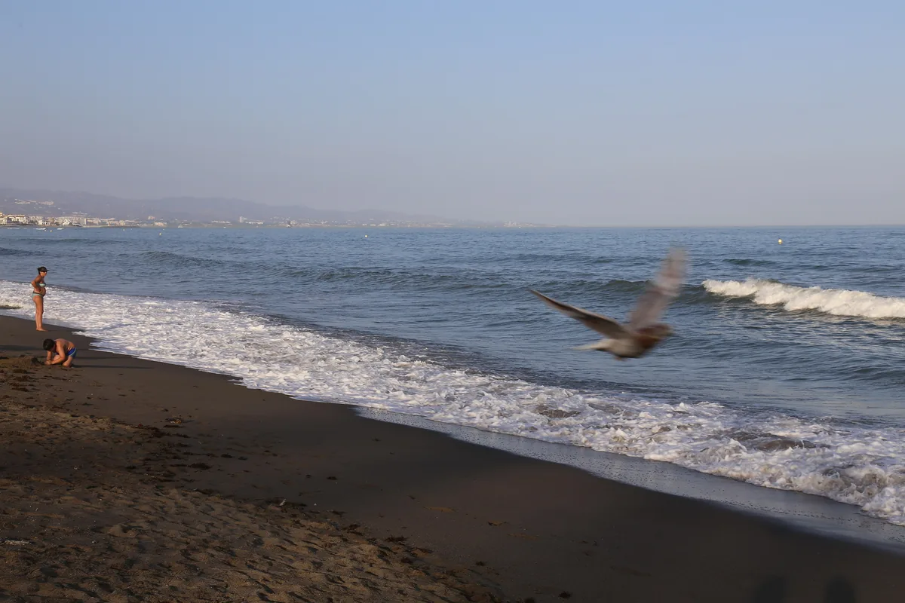
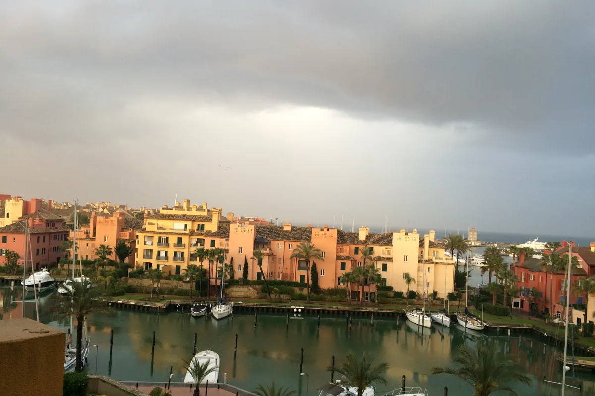
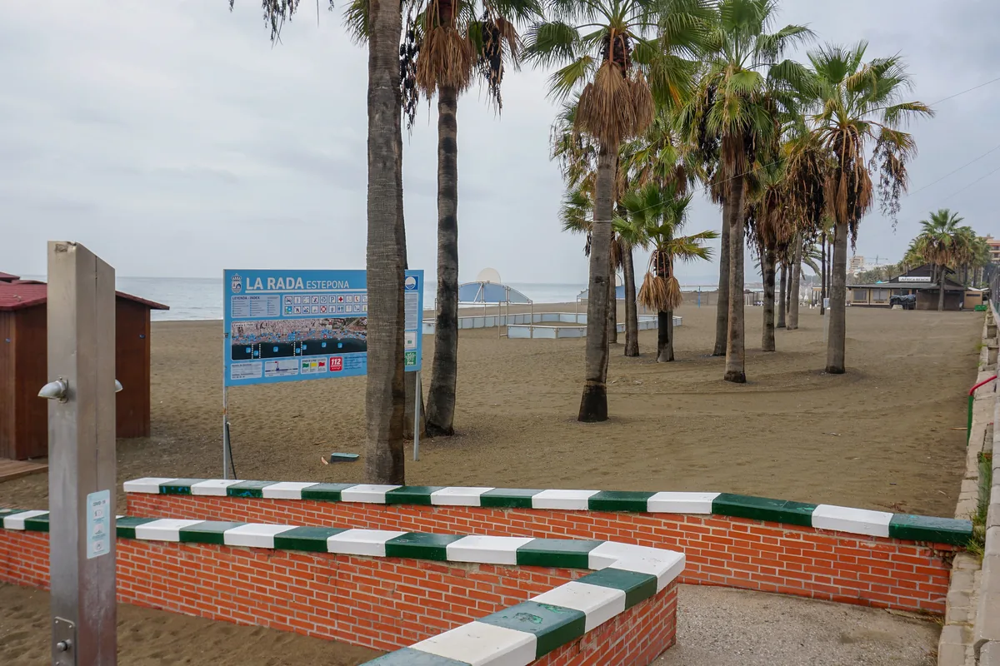
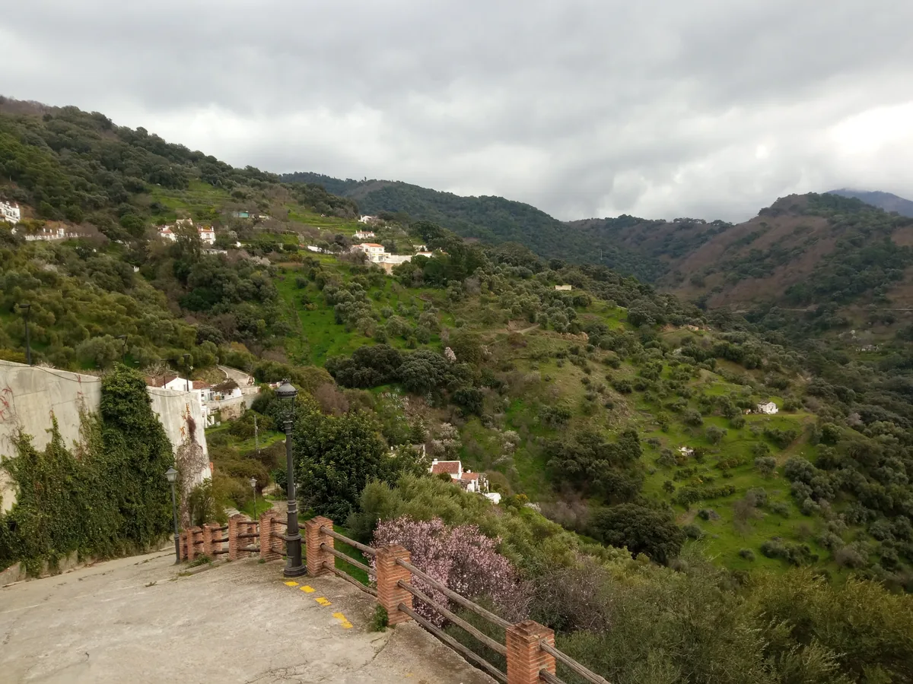

La zone
De la promenade aux terrains de polo
Les sept localités, de la promenade aux terrains de polo, sont présentées ci-dessous. Chacune a une courte description et un aperçu de ce qui est à vendre maintenant.
San Pedro de Alcántara · Estepona · Casares · Manilva · Sotogrande
Westersol met les acheteurs en relation avec des agents locaux examinés, vraiment compétents, entre San Pedro de Alcántara et Sotogrande. Vous nous dites ce que vous cherchez. Nous choisissons personnellement un agent en qui nous avons confiance et nous vous le présentons, sans frais pour vous. L’agent s’occupe des visites et de la discussion sur le prix. Le guide d’achat et les guides des villes vous aident à vous préparer.

Cette côte n'est pas un seul marché. San Pedro est une vraie ville, avec une longue promenade au bord de la mer. Estepona a un vieux centre et un port qui travaille encore. Plus à l'ouest, les villages montent la colline, avec vue sur Gibraltar et, par temps clair, sur l'Afrique. Chaque commune a son rythme et ses prix. Voici le début du guide. Le guide d’achat complet et les guides des villes vont plus loin. Quand vous êtes prêt, nous vous présentons à un agent local de confiance.
Les sept localités, de la promenade aux terrains de polo, sont présentées ci-dessous. Chacune a une courte description et un aperçu de ce qui est à vendre maintenant.
Pour un bien existant en Andalousie, vous payez 7 pour cent de droits d’enregistrement (ITP). Pour un logement neuf typique, ce sont 10 pour cent de TVA plus 1,2 pour cent de droits de timbre (AJD), soit 11,2 pour cent. S’y ajoutent le notaire, le cadastre et le plus souvent un avocat — des postes sans pourcentage légal fixe. La fourchette d’environ 10 à 13 pour cent souvent citée est une indication, pas un devis. Le guide d’achat indique les sources.
D'abord le NIE et un avocat qui travaille pour vous, pas pour le vendeur. Ensuite la réservation, le contrat d'arras, les vérifications et l'escritura chez le notaire. Un achat prend souvent plusieurs mois. C'est pourquoi nous demandons votre délai : dans les douze mois, ou plus tard.
Lire le guide d’achat complet Guides des villes



Un aperçu des logements à vendre dans chacune des sept localités, d'après Idealista le 15 novembre 2026. Ce ne sont pas des annonces sur ce site.

San Pedro de Alcántara a une longue promenade le long de la plage et un centre qui reste un village, avec Guadalmina juste à côté.
1 079 logements à vendre (Idealista, 15 novembre 2026).
Les exemples de ce jour-là se situaient entre 395 000 euros et 1 395 000 euros.

Estepona, c'est la vieille ville, le port et, derrière, la Sierra Bermeja.
5 580 logements à vendre (Idealista, 15 novembre 2026).
Les exemples de ce jour-là se situaient entre 269 000 euros et 1 395 000 euros.

Casares est accroché à la colline, un village blanc, avec le golf et la mer en bas.
809 logements à vendre (Idealista, 15 novembre 2026).
Les exemples de ce jour-là se situaient entre 330 000 euros et 775 000 euros.

Manilva est une ville de tous les jours, avec une digue.
98 logements à vendre dans le bourg même, et non dans toute la commune (Idealista, 15 novembre 2026).
Les exemples de ce jour-là se situaient entre 250 000 euros et 750 000 euros.

Sabinillas est une ville de tous les jours, avec une digue.
149 logements à vendre (Idealista, 15 novembre 2026).
Les exemples de ce jour-là se situaient entre 220 000 euros et 1 100 000 euros.

La Duquesa s'organise autour de sa marina.
235 logements à vendre à La Duquesa et Puerto de la Duquesa, au total (Idealista, 15 novembre 2026).
Les exemples de ce jour-là se situaient entre 275 000 euros et 699 000 euros.

Sotogrande, ce sont le polo, le golf, le port et les domaines fermés, avec Alcaidesa à côté.
879 logements à vendre (Idealista, 15 novembre 2026).
Les exemples de ce jour-là se situaient entre 279 000 euros et 1 350 000 euros.
Indicatif, d'après les annonces publiques du 15 nov. 2026.
Voici des exemples du type de logements neufs que l'on trouve entre San Pedro de Alcántara et Sotogrande. Ce ne sont pas des annonces. Westersol n'a aucun partenariat avec un projet, et ne vend pas de logements sur plan.
De nouveaux immeubles d'appartements à quelques minutes à pied de la promenade et de la plage, près du centre.

Des appartements en première et en seconde ligne, sur le littoral entre San Pedro et le centre d'Estepona.

Des maisons mitoyennes et des villas au-dessus de la ville, souvent avec vue sur la mer et sur la Sierra Bermeja.
Des appartements près des golfs de la côte de Casares, y compris autour de Finca Cortesin.

Des logements avec vue sur le port, et de nouveaux appartements à quelques minutes de la marina.

Des villas et des appartements neufs dans les domaines, près du golf, des terrains de polo et de la marina.
Après l'admission, l'agence partenaire peut vous montrer les projets réellement en vente à ce moment-là.

Notre force est simple : nous sélectionnons personnellement des agents locaux de confiance, vraiment compétents, et nous vous présentons à l’un d’eux, sans frais pour vous. Nous ne sommes pas une agence, et pas un négociateur.
Budget, délai, secteur, type de bien, et si vous achetez au comptant ou avec un crédit.
Nous examinons votre demande et sélectionnons un agent local que nous avons regardé de près : quelqu’un qui connaît vraiment cette côte, qui travaille de façon ouverte et qui aide correctement les acheteurs.
Avec votre accord, nous vous présentons par écrit, avant tout contact. Cette présentation ne vous coûte rien.
Les visites, l'offre et la discussion sur le prix appartiennent à l’agent. Nous restons présents jusqu’à l’acte.
Le récit ci-dessous illustre le parcours. Il ne s'agit pas d'un vrai client.
Un couple de Liège s'intéresse à une maison à Casares, ou peut-être à Sotogrande. Ils remplissent le formulaire : budget, délai et le secteur qu'ils ont en tête.
Westersol leur répond en français, vérifie ces points, et demande s'ils acceptent d'être présentés à un agent local de confiance que nous avons personnellement choisi. S'ils disent oui, la présentation part par écrit. Ensuite, c'est l'agent qui organise les visites et mène la négociation.
Cette rubrique reste vide jusqu'à ce qu'un vrai acheteur accepte par écrit que nous utilisions ses mots ici.
Aux acheteurs de Belgique ou de France qui cherchent une résidence principale, une seconde maison ou un investissement calme entre San Pedro de Alcántara et Sotogrande, avec un budget à partir d'environ 300 000 € et un horizon de douze mois ou moins. Si vous êtes encore en phase d'exploration, vous pouvez aussi remplir le formulaire ; ces demandes sont traitées comme une information, pas comme une introduction immédiate.

Un court formulaire, le point de départ d’une présentation à un agent de confiance. Nous vous répondons en français. Nous n'utilisons vos données que pour traiter votre demande et, seulement avec votre accord ultérieur, les transmettre à cet agent.